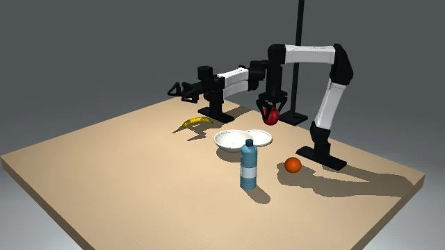

← DreamCheck quick guide
Two-arm relay replay
Step through four saved frames from a scripted MuJoCo run. No API key is needed.
Left pickup
Plate transfer
Right pickup
Settled placement

The left gripper lifts the apple clear of its starting surface.